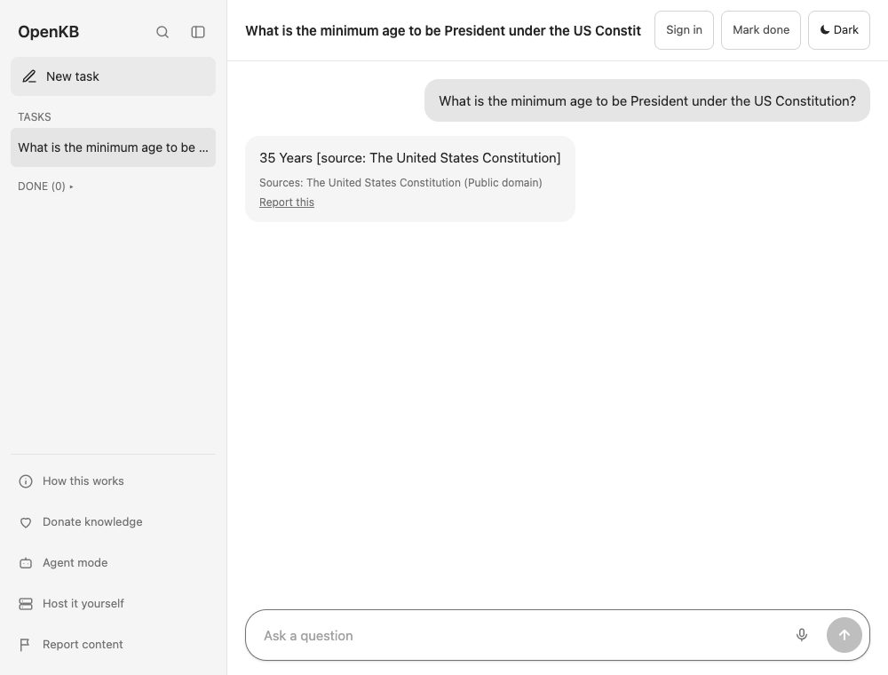

OpenKB v0.1 beta
OpenKB is the first model you can run locally and have the same result as any frontier models you may know. It answers from a growing open library the community populates constantly
Checking the live demo...
The demo runs on one small machine and answers one question at a time. If it is busy you will see a short queue message.
Small model, shared library
A small AI model that runs on your own computer reads one shared library. It looks up only the parts it needs.
Sources and licences shown
Every answer names its sources and the licence of each one. If the answer is not in the library, it says so.
Open licences only
Public domain, CC0, CC BY, CC BY-SA, MIT, Apache-2.0 and BSD. The library keeps references, not copies.
